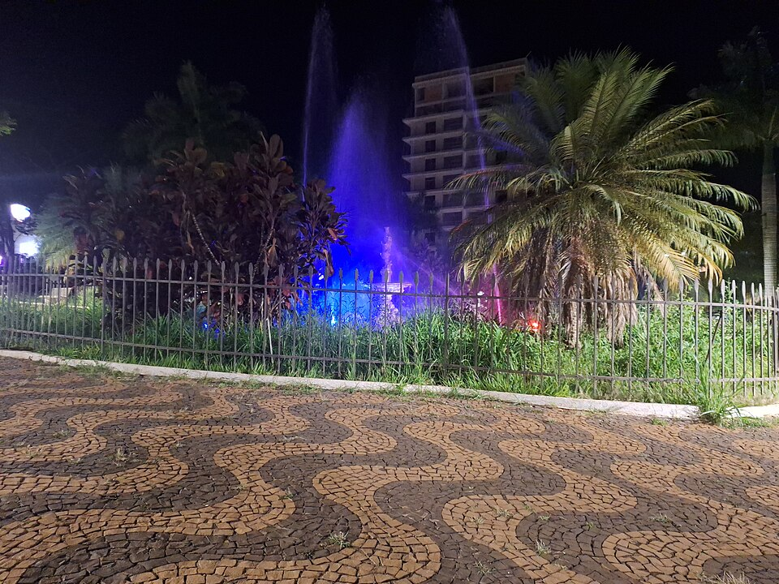
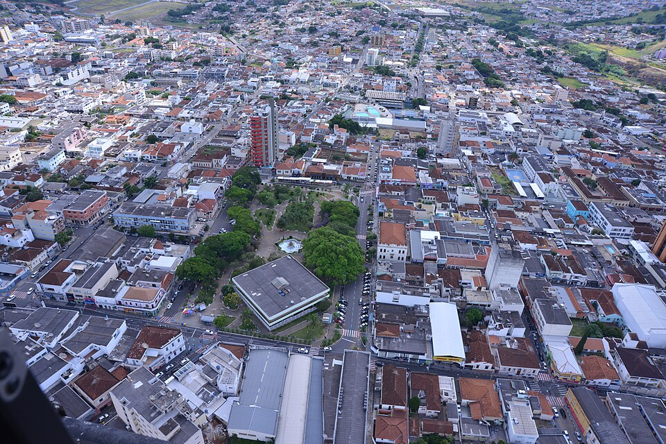
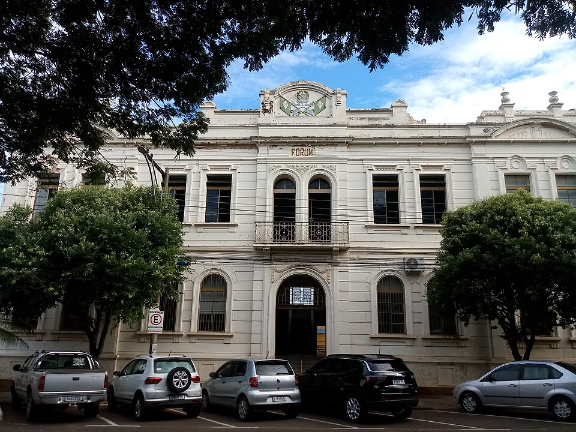
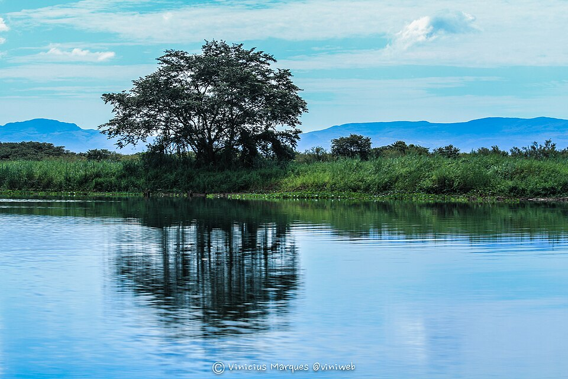
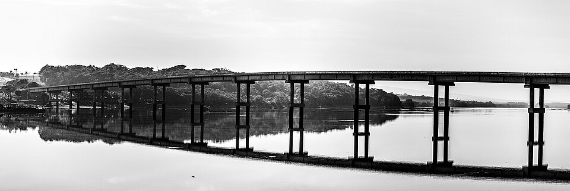
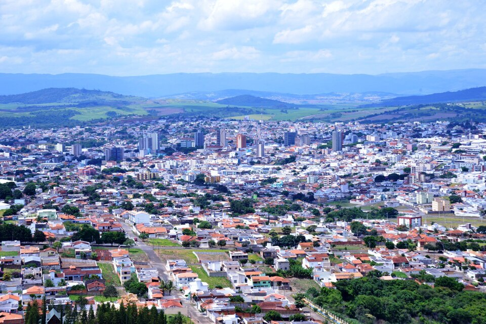
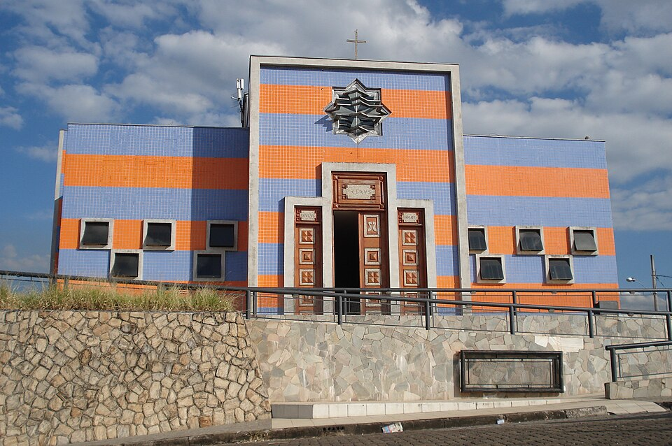
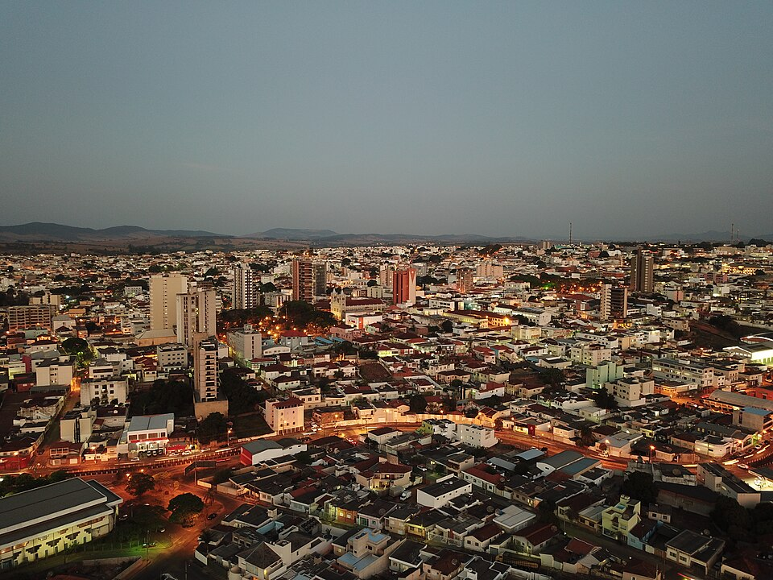
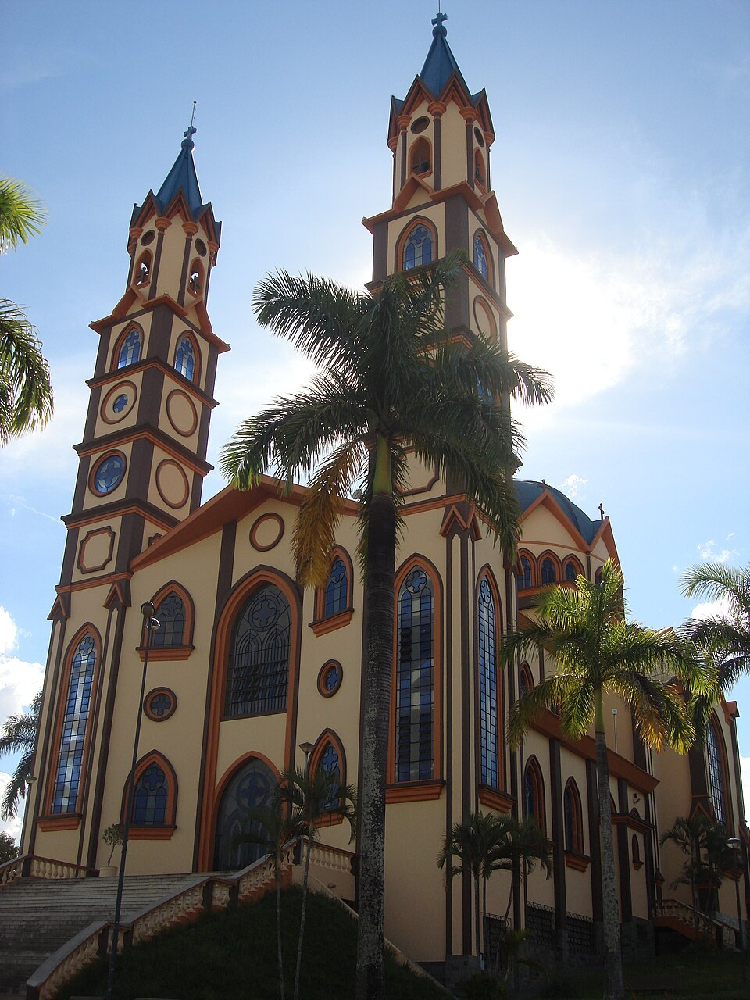
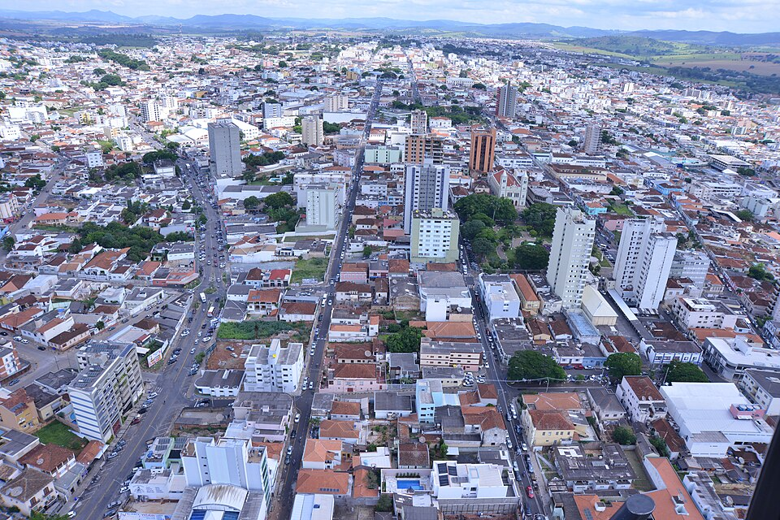

As fotos guardadas
11 fotografias de licença livre. Cada uma leva o autor, a licença (com link) e a fonte — licença livre não dispensa o crédito. As fotos antigas de família e do Centro de Memória não se copiam: pedem-se.




























